VirtualBox安装CentOS
virtualbox虚拟机安装Linux，版本：CentOS7
virtualbox版本：6.0.6
如果你使用VirtualBox安装过Ubuntu，最开始的过程肯定已经很熟悉了。主要过程为：
- 下载
- 创建虚拟机
- 设置虚拟机
- 开始安装
- 安装完成并登录
获取CentOS
CentOS下载页：
https://www.centos.org/download/
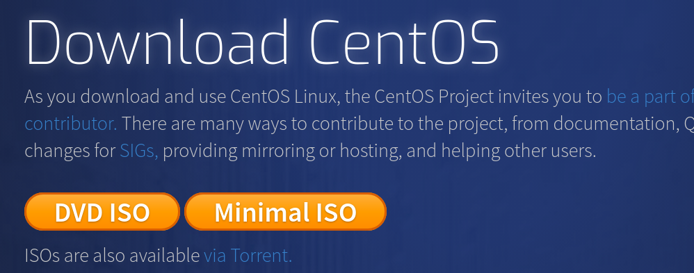
其中包括两个下载项，DVD ISO是包含非常全的发行包，文件比较大，一般都在将近4G大小，但是安装时可以选择需要安装哪些。Minimal ISO是最小安装版本，只有几百兆的大小。安装Minimal ISO之后仍然可以再安装配置桌面环境、开发环境等。
创建虚拟机
点击[新建]创建虚拟机，这时候的文件夹其实不是最终安装的虚拟盘所在位置，而是记录虚拟机信息的目录，后面创建系统盘的时候可以选择把虚拟盘放在其他位置。
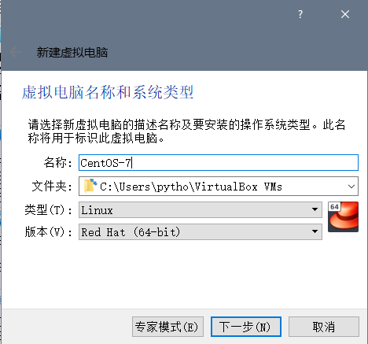
设置内存大小，不过这在以后还可以调整。
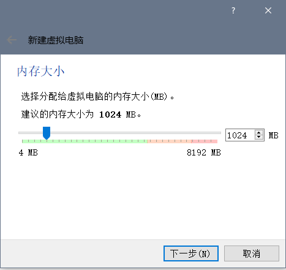
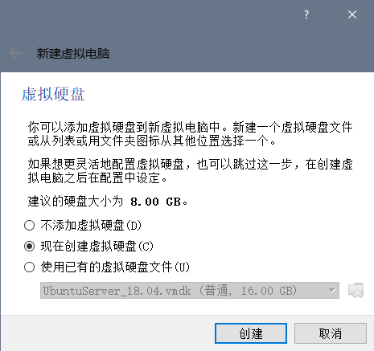
虚拟盘类型并不太多限制和要求，选择vmdk格式是因为比较通用。

动态分配内存大小，这可以保证合理的使用存储，按需分配，而不是一开始就设置一个固定的大小。虚拟安装后占用空间很小，随着安装软件、存储文件等，虚拟盘大小会增长。
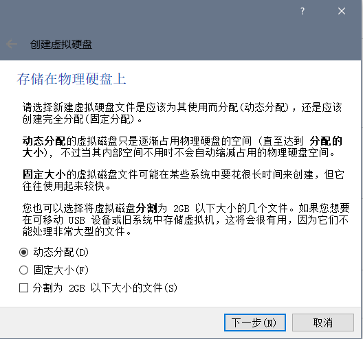
这时候选择虚拟盘的具体路径，默认是在C盘的，存储上限设置为12G，可以按照实际需求设置，建议不要低于10G。因为之前设置使用动态分配，这里是限制最大不超过12G。
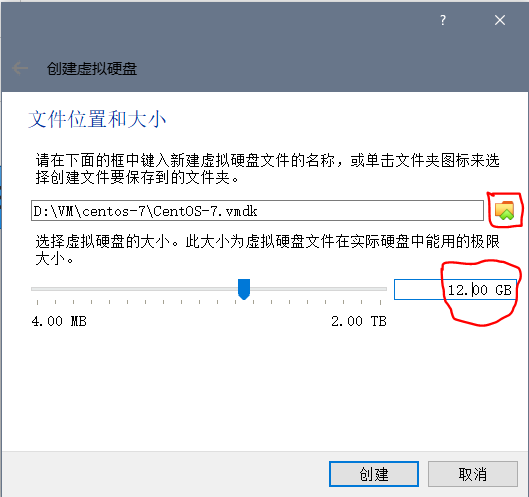
设置虚拟机
现在虚拟机创建完成，现在要设置虚拟机的ISO镜像文件，CPU核数，网卡。选中刚才的虚拟机，点击设置。
设置CPU核数
CPU核心数，可简单理解为，多核CPU就是多个芯片可以同时运行任务。根据CPU类型，一般设置为2核没问题，游戏本多为4核。
由于2017年AMD的Ryzen系列的推出，引发了桌面CPU市场的新一轮大战，这次战役，AMD大获全胜，Intel匆忙应对，但是两个公司相互竞争使得CPU核数已经是4核起，6核，8核甚至更高的都有。
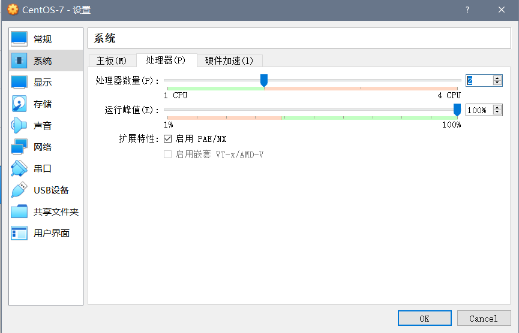
选择ISO镜像
.iso镜像文件是一个标准，目前操作系统多数以此格式发行。选择镜像文件就好像是制作U盘启动盘，然后把系统安装到之前创建的虚拟盘上。
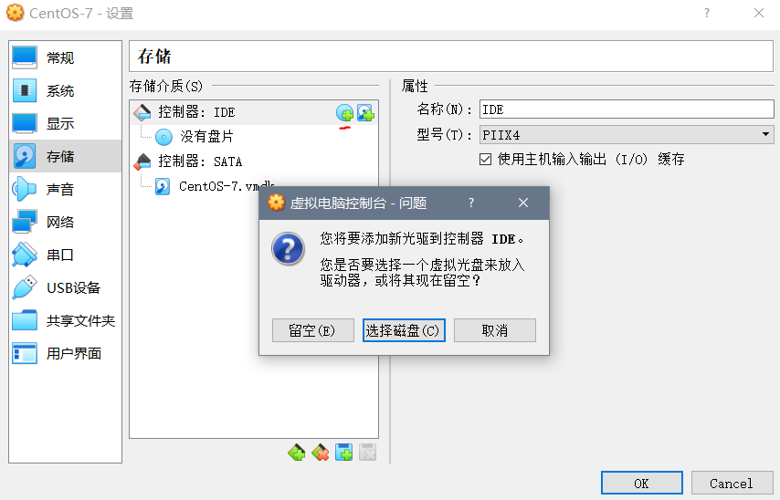
如果没有CentOS镜像文件，需要点击注册选择ISO文件。
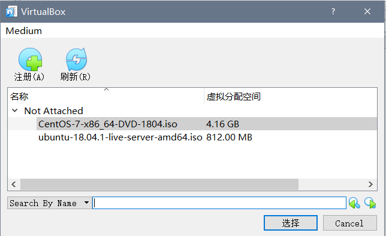
网卡
这是容易让人迷惑的地方，也是容易出问题的地方。并且尤其是对网络不是特别清楚的同学就不知道如何设置。
网卡1默认是开启的，并默认就是‘网络地址转换（NAT）’，如果不是就要改成这个模式，注意还有一个是‘NAT网络’，这两个不要搞混了。
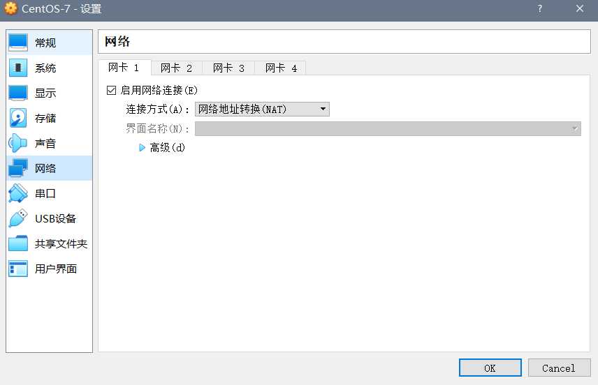
如果看到我之前的安装Ubuntu系统的文章，没有启用网卡2，Ubuntu使用的是桌面环境，大部分情况也不需要。除非你要使用远程连接的模式。但是这里要启用网卡2，因为我们不安装桌面环境，并通过一个SSH客户端连接到虚拟机。网卡2使用Host-only模式。所以总结如下：
- 网卡1：网络地址转换（NAT），用于访问外网
- 网卡2：host-only，用于本地物理机系统访问虚拟机
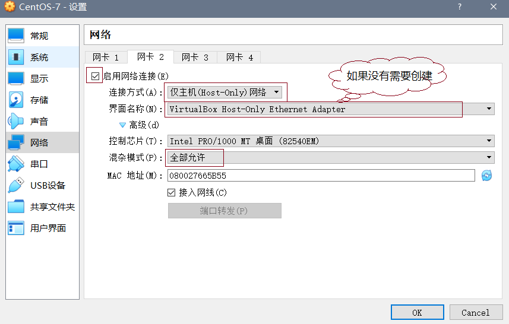
设置好后，点击‘OK’确认。
开始安装
选中虚拟机，点击‘启动’。
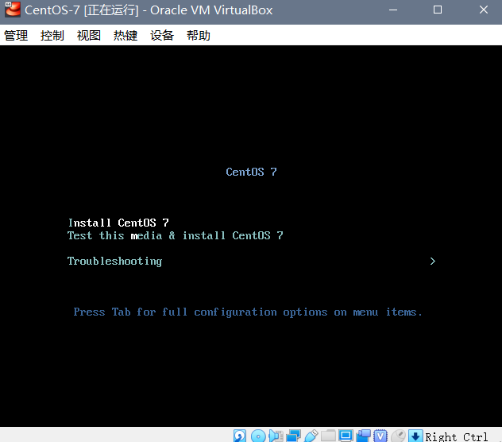
选择第一项，Install CentOS7（安装CentOS7）。
选择安装语言
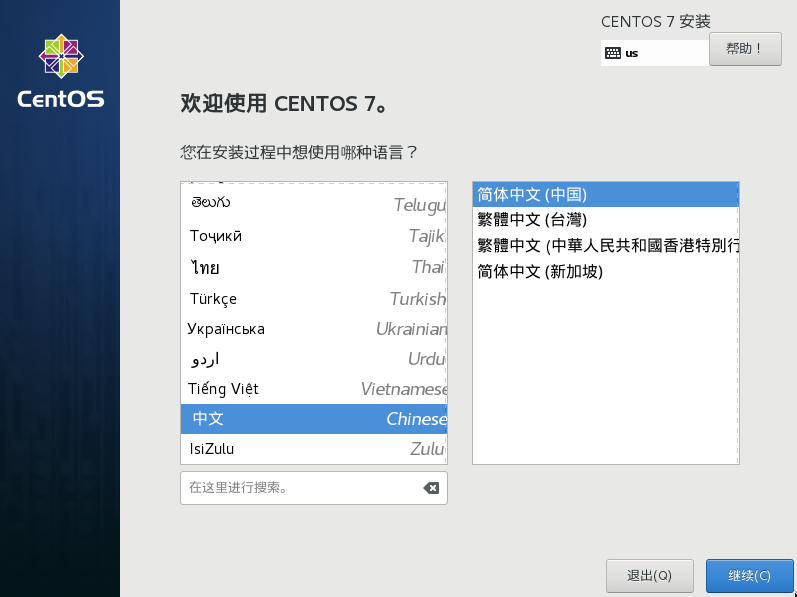
选择安装类型
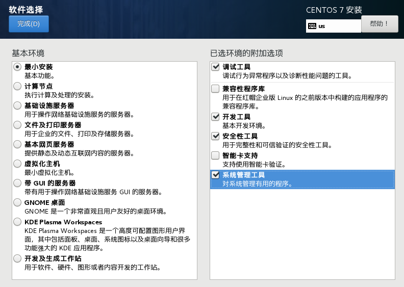
我这里选择的是最小安装，并选取一些附加项。最小安装仍然可以打造成桌面环境，配置其他服务等。
开始安装
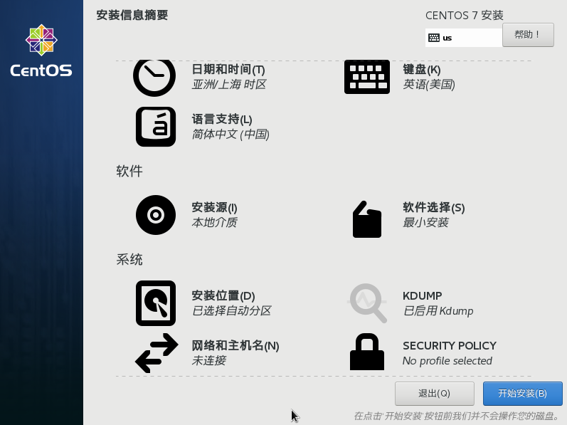
注意，每一项，都要设置才可以点击‘开始安装’按钮，键盘布局选择‘英语（美国）’，这和语言无关，而是键盘按键的布局类型。
！注意：我这里开始没有选择网络连接，忽略了，我是后来启动后设置的。你可以直接点击进入设置界面，启用网卡1和网卡2。
设置用户
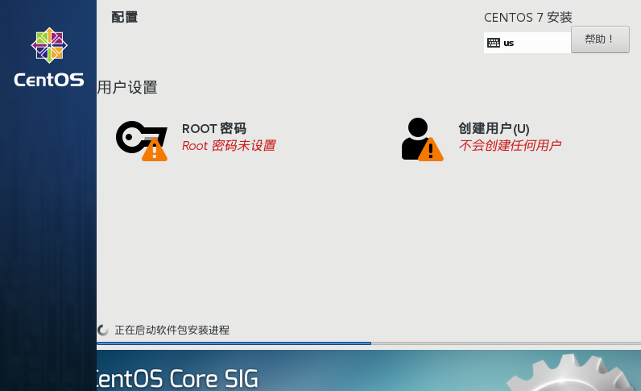
在安装过程中，需要设置root用户密码，并且可以创建一个新的用户，把它也作为管理员（能够使用sudo获取root权限）。
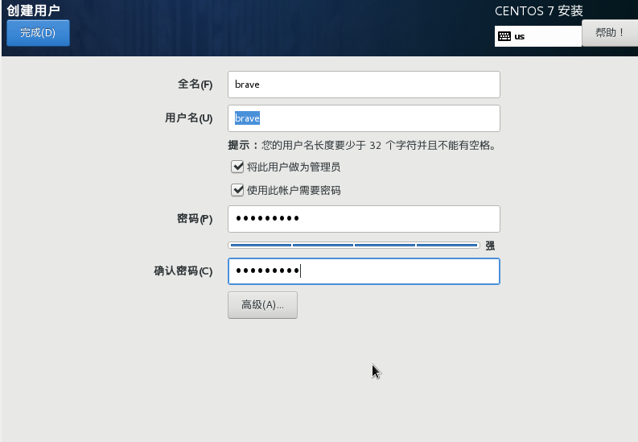
完成重启
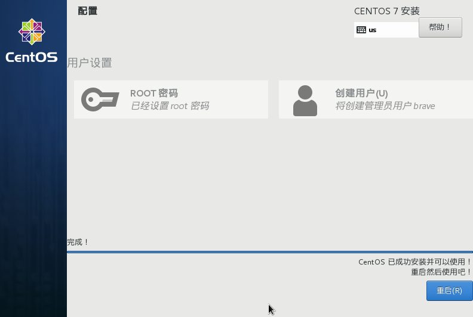
登录系统
登录
输入用户名和密码登录。
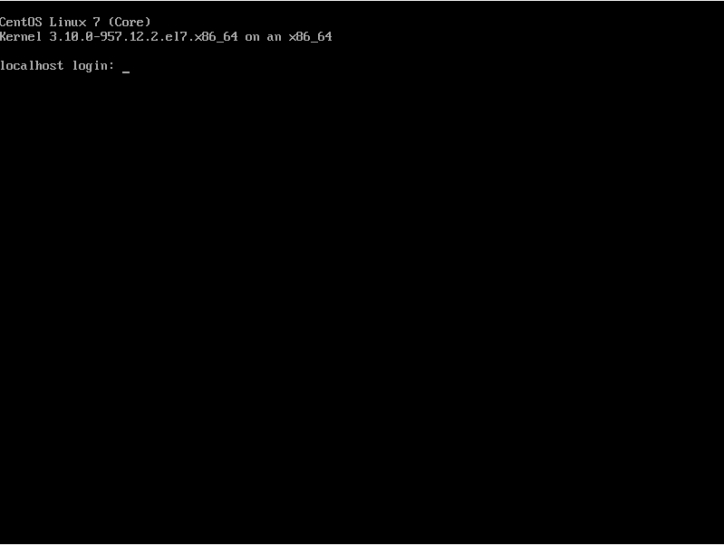
软件更新
运行sudo yum update。如果你是root用户登录，则不需要加sudo。询问[y/d/N]，可输入y确认。
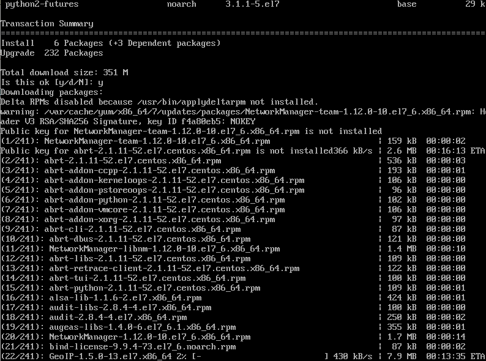